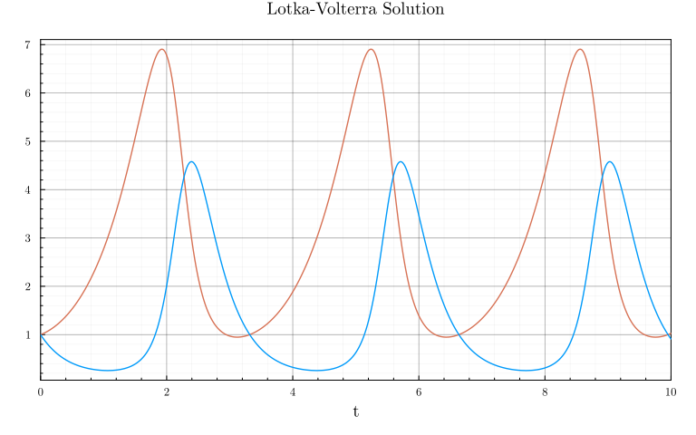
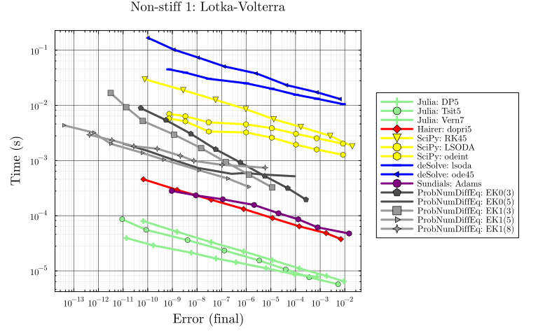
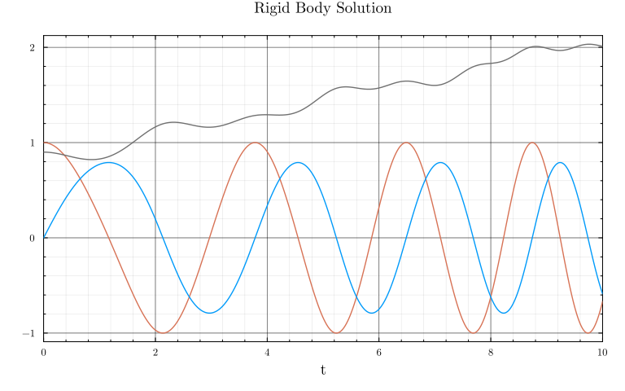
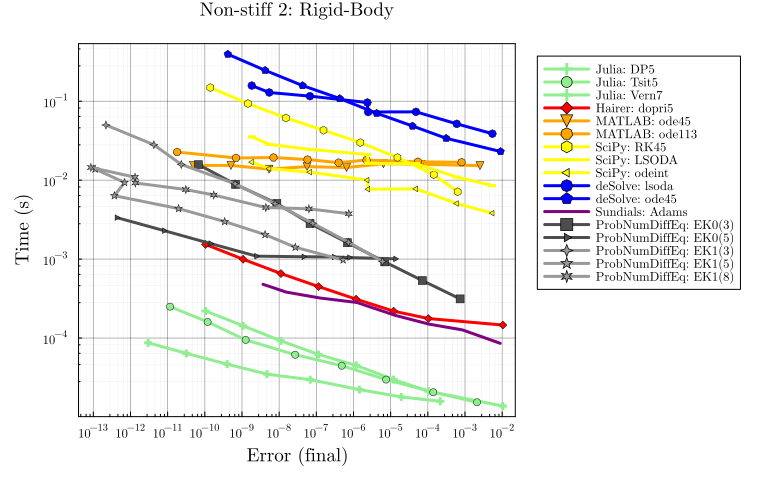
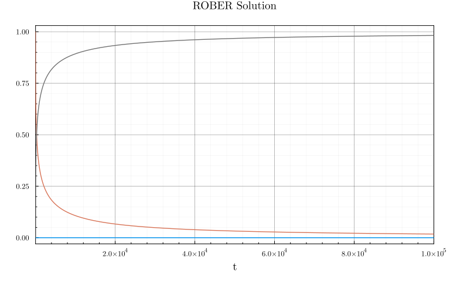
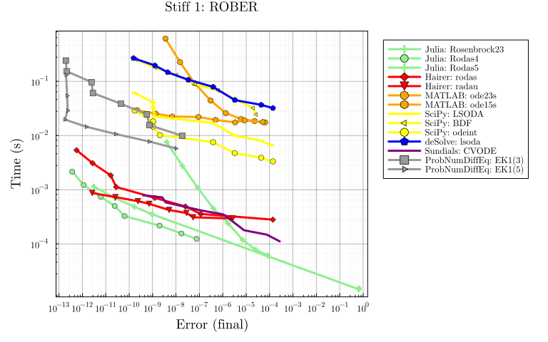
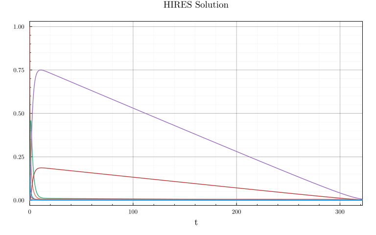
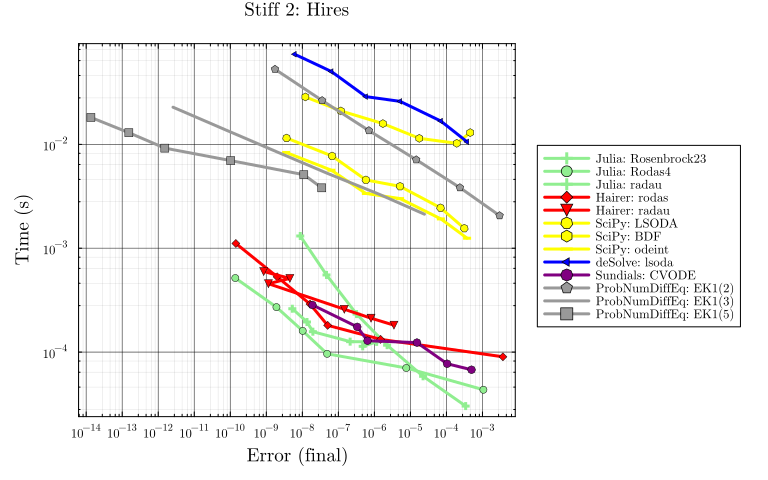

ProbNumDiffEq.jl vs. various solver packages
Adapted from SciMLBenchmarks.jl multi-language wrapper benchmark.
Code:
# Importsusing LinearAlgebra, Statisticsusing StaticArrays, DiffEqDevTools, ParameterizedFunctions, Plots, SciMLBase, OrdinaryDiffEqusing ODEInterface, ODEInterfaceDiffEq, Sundials, SciPyDiffEq, deSolveDiffEq, LSODAusing LoggingExtrasODEInterface.loadODESolvers()using ProbNumDiffEq# Workaround: SciPyDiffEq's odeint retcode check compares fullout["tcur"] == saveat[end],# but tcur is the internal step endpoint (e.g. 10.07) which overshoots the requested time.# Fix: use >= comparison and index into the tcur vector.include_string(SciPyDiffEq, """function DiffEqBase.__solve(prob::DiffEqBase.AbstractODEProblem, alg::SciPyAlgorithm, timeseries = [], ts = [], ks = []; dense = true, dt = nothing, dtmax = abs(prob.tspan[2] - prob.tspan[1]), dtmin = eps(eltype(prob.tspan)), save_everystep = false, saveat = eltype(prob.tspan)[], timeseries_errors = true, reltol = 1e-3, abstol = 1e-6, maxiters = 10_000, kwargs...) p = prob.p tspan = prob.tspan u0 = prob.u0 if DiffEqBase.isinplace(prob) f = function (t, u) du = similar(u) prob.f(du, u, p, t) du end else f = (t, u) -> prob.f(u, p, t) end _saveat = isempty(saveat) ? nothing : saveat if _saveat isa Array __saveat = _saveat elseif _saveat isa Number __saveat = Array(tspan[1]:_saveat:tspan[2]) elseif _saveat isa Nothing if save_everystep __saveat = nothing else __saveat = [tspan[1], tspan[2]] end else __saveat = Array(_saveat) end if alg isa odeint __saveat === nothing && error("saveat is required for odeint!") sol, fullout = integrate.odeint(f, u0, __saveat, hmax = dtmax, rtol = reltol, atol = abstol, full_output = 1, tfirst = true, mxstep = maxiters) tcur = fullout["tcur"] retcode = first(tcur) >= __saveat[end] ? ReturnCode.Success : ReturnCode.Failure ts = __saveat y = sol if u0 isa AbstractArray timeseries = Vector{typeof(u0)}(undef, length(ts)) for i in 1:length(ts) timeseries[i] = @view y[i, :] end else timeseries = y end else sol = integrate.solve_ivp(f, tspan, u0, first_step = dt, max_step = dtmax, rtol = reltol, atol = abstol, t_eval = __saveat, dense_output = dense, method = string(alg)[13:(end - 2)]) ts = sol["t"] y = sol["y"] retcode = sol["success"] == false ? ReturnCode.Failure : ReturnCode.Success if u0 isa AbstractArray timeseries = Vector{typeof(u0)}(undef, length(ts)) for i in 1:length(ts) timeseries[i] = @view y[:, i] end else timeseries = y end end if !(alg isa odeint) && dense _interp = PyInterpolation(sol["sol"]) else _interp = DiffEqBase.LinearInterpolation(ts, timeseries) end DiffEqBase.build_solution(prob, alg, ts, timeseries, interp = _interp, dense = dense, retcode = retcode, timeseries_errors = timeseries_errors)end""")Plots.theme( :dao; markerstrokewidth=0.5, legend=:outertopright, margin=5Plots.mm, xticks=10.0 .^ (-16:1:16), yticks=10.0 .^ (-6:1:5),)# Constants used throughout this benchmark as we only consider final valuesconst DENSE = false # used to decide if we smooth or notconst SAVE_EVERYSTEP = false;# COLORS and a realted utilityCOLORS = Dict( "Julia" => :LightGreen, "Julia (static)" => :DarkGreen, "Hairer" => :Red, "SciPy" => :Yellow, "deSolve" => :Blue, "Sundials" => :Purple, "liblsoda" => :Purple, "ProbNumDiffEq: EK0" => :Gray30, "ProbNumDiffEq: EK1" => :Gray60,)tocolor(n) = if split(n, '(')[1] in keys(COLORS) COLORS[split(n, '(')[1]]else COLORS[split(n, ':')[1]]end# Do not show "deprecated warnings"deprecated_filter(log_args) = !contains(log_args.message, "deprecated")filtered_logger = ActiveFilteredLogger(deprecated_filter, global_logger());Non-Stiff Problem 1: Lotka-Volterra
Code:
f = @ode_def LotkaVolterra begin dx = a*x - b*x*y dy = -c*y + d*x*yend a b c dp = [1.5, 1, 3, 1]tspan = (0.0, 10.0)u0 = [1.0, 1.0]prob = ODEProblem{true,SciMLBase.FullSpecialize()}(f,u0,tspan,p)staticprob = ODEProblem{false,SciMLBase.FullSpecialize()}(f,SVector{2}(u0),tspan,SVector{4}(p))sol = solve(prob,Vern7(),abstol=1/10^14,reltol=1/10^14,dense=false)test_sol = solplot(sol, title="Lotka-Volterra Solution", legend=false, xticks=:auto, yticks=:auto)
Code:
_setups = [ "Julia: DP5" => Dict(:alg=>DP5()) "Julia: Tsit5" => Dict(:alg=>Tsit5()) "Julia: Vern7" => Dict(:alg=>Vern7()) "Hairer: dopri5" => Dict(:alg=>ODEInterfaceDiffEq.dopri5()) "SciPy: RK45" => Dict(:alg=>SciPyDiffEq.RK45()) "SciPy: LSODA" => Dict(:alg=>SciPyDiffEq.LSODA()) "SciPy: odeint" => Dict(:alg=>SciPyDiffEq.odeint()) "deSolve: lsoda" => Dict(:alg=>deSolveDiffEq.lsoda()) "deSolve: ode45" => Dict(:alg=>deSolveDiffEq.ode45()) "Sundials: Adams" => Dict(:alg=>Sundials.CVODE_Adams()) "ProbNumDiffEq: EK0(3)" => Dict(:alg=>EK0(order=3, smooth=DENSE)) "ProbNumDiffEq: EK0(5)" => Dict(:alg=>EK0(order=5, smooth=DENSE)) "ProbNumDiffEq: EK1(3)" => Dict(:alg=>EK1(order=3, smooth=DENSE)) "ProbNumDiffEq: EK1(5)" => Dict(:alg=>EK1(order=5, smooth=DENSE)) "ProbNumDiffEq: EK1(8)" => Dict(:alg=>EK1(order=8, smooth=DENSE))]labels = first.(_setups)setups = last.(_setups)colors = tocolor.(labels) |> permutedimsabstols = 1.0 ./ 10.0 .^ (6:13)reltols = 1.0 ./ 10.0 .^ (3:10)wp = with_logger(filtered_logger) do WorkPrecisionSet( [prob, staticprob], abstols, reltols, setups; names = labels, appxsol = [test_sol, test_sol], dense = DENSE, save_everystep = SAVE_EVERYSTEP, numruns = 10, maxiters = Int(1e7), timeseries_errors = false, verbose = false, )endplot(wp, title = "Non-stiff 1: Lotka-Volterra", color = colors)
Non-Stiff Problem 2: Rigid Body
Code:
f = @ode_def RigidBodyBench begin dy1 = -2*y2*y3 dy2 = 1.25*y1*y3 dy3 = -0.5*y1*y2 + 0.25*sin(t)^2endu0 = [1.0;0.0;0.9]tspan = (0.0, 10.0)prob = ODEProblem{true,SciMLBase.FullSpecialize()}(f,u0,tspan)staticprob = ODEProblem{false,SciMLBase.FullSpecialize()}(f,SVector{3}(u0),tspan)sol = solve(prob,Vern7(),abstol=1/10^14,reltol=1/10^14,dense=false)test_sol = solplot(sol, title="Rigid Body Solution", legend=false, xticks=:auto, yticks=:auto)
Code:
_setups = [ "Julia: DP5" => Dict(:alg=>DP5()) "Julia: Tsit5" => Dict(:alg=>Tsit5()) "Julia: Vern7" => Dict(:alg=>Vern7()) "Hairer: dopri5" => Dict(:alg=>dopri5()) "SciPy: RK45" => Dict(:alg=>SciPyDiffEq.RK45()) "SciPy: LSODA" => Dict(:alg=>SciPyDiffEq.LSODA()) "SciPy: odeint" => Dict(:alg=>SciPyDiffEq.odeint()) "deSolve: lsoda" => Dict(:alg=>deSolveDiffEq.lsoda()) "deSolve: ode45" => Dict(:alg=>deSolveDiffEq.ode45()) "Sundials: Adams" => Dict(:alg=>CVODE_Adams()) "ProbNumDiffEq: EK0(3)" => Dict(:alg=>EK0(order=3, smooth=DENSE)) "ProbNumDiffEq: EK0(5)" => Dict(:alg=>EK0(order=5, smooth=DENSE)) "ProbNumDiffEq: EK1(3)" => Dict(:alg=>EK1(order=3, smooth=DENSE)) "ProbNumDiffEq: EK1(5)" => Dict(:alg=>EK1(order=5, smooth=DENSE)) "ProbNumDiffEq: EK1(8)" => Dict(:alg=>EK1(order=8, smooth=DENSE))]labels = first.(_setups)setups = last.(_setups)colors = tocolor.(labels) |> permutedimsabstols = 1.0 ./ 10.0 .^ (6:13)reltols = 1.0 ./ 10.0 .^ (3:10)wp = with_logger(filtered_logger) do WorkPrecisionSet( [prob,staticprob], abstols, reltols, setups; names = labels, appxsol = [test_sol, test_sol], dense = DENSE, save_everystep = SAVE_EVERYSTEP, numruns = 10, maxiters = Int(1e7), timeseries_errors = false, verbose = false )endplot(wp, title = "Non-stiff 2: Rigid-Body", color = colors)
Stiff Problem 1: ROBER
Code:
rober = @ode_def begin dy₁ = -k₁*y₁+k₃*y₂*y₃ dy₂ = k₁*y₁-k₂*y₂^2-k₃*y₂*y₃ dy₃ = k₂*y₂^2end k₁ k₂ k₃u0 = [1.0,0.0,0.0]p = [0.04,3e7,1e4]prob = ODEProblem{true,SciMLBase.FullSpecialize()}(rober,u0,(0.0,1e5),p)staticprob = ODEProblem{false,SciMLBase.FullSpecialize()}(rober,SVector{3}(u0),(0.0,1e5),SVector{3}(p))sol = solve(prob,CVODE_BDF(),abstol=1/10^14,reltol=1/10^14,dense=false)test_sol = solplot(sol, title="ROBER Solution", legend=false, xlims=(1e0, 1e5), xticks=:auto, yticks=:auto)
Code:
_setups = [ "Julia: Rosenbrock23" => Dict(:alg=>Rosenbrock23()) "Julia: Rodas4" => Dict(:alg=>Rodas4()) "Julia: Rodas5" => Dict(:alg=>Rodas5()) "Hairer: rodas" => Dict(:alg=>rodas()) "Hairer: radau" => Dict(:alg=>radau()) "SciPy: LSODA" => Dict(:alg=>SciPyDiffEq.LSODA()) "SciPy: BDF" => Dict(:alg=>SciPyDiffEq.BDF()) "SciPy: odeint" => Dict(:alg=>SciPyDiffEq.odeint()) "deSolve: lsoda" => Dict(:alg=>deSolveDiffEq.lsoda()) "Sundials: CVODE" => Dict(:alg=>CVODE_BDF()) "ProbNumDiffEq: EK1(3)" => Dict(:alg=>EK1(order=3, smooth=DENSE)) "ProbNumDiffEq: EK1(5)" => Dict(:alg=>EK1(order=5, smooth=DENSE))]labels = first.(_setups)setups = last.(_setups)colors = tocolor.(labels) |> permutedimsabstols = 1.0 ./ 10.0 .^ (5:12)reltols = 1.0 ./ 10.0 .^ (2:9)wp = with_logger(filtered_logger) do WorkPrecisionSet( [prob, staticprob], abstols, reltols, setups; names = labels, dense = DENSE, verbose = false, save_everystep = SAVE_EVERYSTEP, appxsol = [test_sol, test_sol], maxiters=Int(1e5) )endplot(wp, title = "Stiff 1: ROBER", color = colors)
Stiff Problem 2: HIRES
Code:
f = @ode_def Hires begin dy1 = -1.71*y1 + 0.43*y2 + 8.32*y3 + 0.0007 dy2 = 1.71*y1 - 8.75*y2 dy3 = -10.03*y3 + 0.43*y4 + 0.035*y5 dy4 = 8.32*y2 + 1.71*y3 - 1.12*y4 dy5 = -1.745*y5 + 0.43*y6 + 0.43*y7 dy6 = -280.0*y6*y8 + 0.69*y4 + 1.71*y5 - 0.43*y6 + 0.69*y7 dy7 = 280.0*y6*y8 - 1.81*y7 dy8 = -280.0*y6*y8 + 1.81*y7endu0 = zeros(8)u0[1] = 1u0[8] = 0.0057prob = ODEProblem{true,SciMLBase.FullSpecialize()}(f,u0,(0.0,321.8122))staticprob = ODEProblem{false,SciMLBase.FullSpecialize()}(f,SVector{8}(u0),(0.0,321.8122))sol = solve(prob,Rodas5(),abstol=1/10^14,reltol=1/10^14, dense=false)test_sol = solplot(sol, title="HIRES Solution", legend=false, xticks=:auto, yticks=:auto)
Code:
_setups = [ "Julia: Rosenbrock23" => Dict(:alg=>Rosenbrock23()) "Julia: Rodas4" => Dict(:alg=>Rodas4()) "Julia: radau" => Dict(:alg=>RadauIIA5()) "Hairer: rodas" => Dict(:alg=>rodas()) "Hairer: radau" => Dict(:alg=>radau()) "SciPy: LSODA" => Dict(:alg=>SciPyDiffEq.LSODA()) "SciPy: BDF" => Dict(:alg=>SciPyDiffEq.BDF()) "SciPy: odeint" => Dict(:alg=>SciPyDiffEq.odeint()) "deSolve: lsoda" => Dict(:alg=>deSolveDiffEq.lsoda()) "Sundials: CVODE" => Dict(:alg=>CVODE_BDF()) "ProbNumDiffEq: EK1(2)" => Dict(:alg=>EK1(order=2, smooth=DENSE)) "ProbNumDiffEq: EK1(3)" => Dict(:alg=>EK1(order=3, smooth=DENSE)) "ProbNumDiffEq: EK1(5)" => Dict(:alg=>EK1(order=5, smooth=DENSE))]labels = first.(_setups)setups = last.(_setups)colors = tocolor.(labels) |> permutedimsabstols = 1.0 ./ 10.0 .^ (5:10)reltols = 1.0 ./ 10.0 .^ (1:6)wp = with_logger(filtered_logger) do WorkPrecisionSet( [prob, staticprob], abstols, reltols, setups; names = labels, dense = false, verbose = false, save_everystep = false, appxsol = [test_sol, test_sol], maxiters = Int(1e5), numruns=100 )endplot(wp, title = "Stiff 2: Hires", color=colors)
Appendix
Computer information:
using InteractiveUtilsInteractiveUtils.versioninfo()Julia Version 1.12.4
Commit 01a2eadb047 (2026-01-06 16:56 UTC)
Build Info:
Official https://julialang.org release
Platform Info:
OS: Linux (x86_64-linux-gnu)
CPU: 128 × AMD Ryzen Threadripper PRO 7985WX 64-Cores
WORD_SIZE: 64
LLVM: libLLVM-18.1.7 (ORCJIT, znver4)
GC: Built with stock GC
Threads: 1 default, 1 interactive, 1 GC (on 128 virtual cores)
Environment:
LD_LIBRARY_PATH = /.singularity.d/libsPackage information:
using PkgPkg.status()Status `/home/nrbosch/.julia/dev/ProbNumDiffEq/benchmarks/Project.toml`
[f3b72e0c] DiffEqDevTools v2.49.0
[31c24e10] Distributions v0.25.123
[7073ff75] IJulia v1.34.3
[7f56f5a3] LSODA v0.7.5
[e6f89c97] LoggingExtras v1.2.0
[e2752cbe] MATLABDiffEq v1.4.0
⌃ [961ee093] ModelingToolkit v11.10.0
[54ca160b] ODEInterface v0.5.0
[09606e27] ODEInterfaceDiffEq v3.15.0
[1dea7af3] OrdinaryDiffEq v6.108.0
[65888b18] ParameterizedFunctions v5.22.0
⌃ [91a5bcdd] Plots v1.41.5
[bf3e78b0] ProbNumDiffEq v0.16.4 `/home/nrbosch/.julia/dev/ProbNumDiffEq`
⌃ [0bca4576] SciMLBase v2.138.1
[505e40e9] SciPyDiffEq v0.2.2
[ce78b400] SimpleUnPack v1.1.0
[90137ffa] StaticArrays v1.9.16
[c3572dad] Sundials v5.1.0
[44d3d7a6] Weave v0.10.12
[0518478a] deSolveDiffEq v1.1.0
Info Packages marked with ⌃ have new versions available and may be upgradable.
Warning The project dependencies or compat requirements have changed since the manifest was last resolved. It is recommended to `Pkg.resolve()` or consider `Pkg.update()` if necessary.Full manifest:
Pkg.status(mode=Pkg.PKGMODE_MANIFEST)Status `/home/nrbosch/.julia/dev/ProbNumDiffEq/benchmarks/Manifest.toml`
[47edcb42] ADTypes v1.21.0
[621f4979] AbstractFFTs v1.5.0
[6e696c72] AbstractPlutoDingetjes v1.3.2
[1520ce14] AbstractTrees v0.4.5
[7d9f7c33] Accessors v0.1.43
[79e6a3ab] Adapt v4.4.0
[66dad0bd] AliasTables v1.1.3
[ec485272] ArnoldiMethod v0.4.0
[c9d4266f] ArrayAllocators v0.3.0
[4fba245c] ArrayInterface v7.22.0
[4c555306] ArrayLayouts v1.12.2
[0e736298] Bessels v0.2.8
[e2ed5e7c] Bijections v0.2.2
⌃ [caf10ac8] BipartiteGraphs v0.1.6
[d1d4a3ce] BitFlags v0.1.9
[62783981] BitTwiddlingConvenienceFunctions v0.1.6
[8e7c35d0] BlockArrays v1.9.3
⌃ [70df07ce] BracketingNonlinearSolve v1.7.1
[fa961155] CEnum v0.5.0
[2a0fbf3d] CPUSummary v0.2.7
[324d7699] CategoricalArrays v1.0.2
[d360d2e6] ChainRulesCore v1.26.0
[fb6a15b2] CloseOpenIntervals v0.1.13
[944b1d66] CodecZlib v0.7.8
[35d6a980] ColorSchemes v3.31.0
[3da002f7] ColorTypes v0.12.1
[c3611d14] ColorVectorSpace v0.11.0
[5ae59095] Colors v0.13.1
⌅ [861a8166] Combinatorics v1.0.2
[38540f10] CommonSolve v0.2.6
[bbf7d656] CommonSubexpressions v0.3.1
[f70d9fcc] CommonWorldInvalidations v1.0.0
[34da2185] Compat v4.18.1
[b152e2b5] CompositeTypes v0.1.4
[a33af91c] CompositionsBase v0.1.2
[2569d6c7] ConcreteStructs v0.2.3
⌃ [f0e56b4a] ConcurrentUtilities v2.5.0
[8f4d0f93] Conda v1.10.3
[187b0558] ConstructionBase v1.6.0
[d38c429a] Contour v0.6.3
[adafc99b] CpuId v0.3.1
[a8cc5b0e] Crayons v4.1.1
[717857b8] DSP v0.8.4
[9a962f9c] DataAPI v1.16.0
[a93c6f00] DataFrames v1.8.1
[864edb3b] DataStructures v0.19.3
[e2d170a0] DataValueInterfaces v1.0.0
[8bb1440f] DelimitedFiles v1.9.1
⌃ [2b5f629d] DiffEqBase v6.203.0
[459566f4] DiffEqCallbacks v4.12.0
[f3b72e0c] DiffEqDevTools v2.49.0
[77a26b50] DiffEqNoiseProcess v5.27.0
[163ba53b] DiffResults v1.1.0
[b552c78f] DiffRules v1.15.1
[a0c0ee7d] DifferentiationInterface v0.7.16
[b4f34e82] Distances v0.10.12
[31c24e10] Distributions v0.25.123
[ffbed154] DocStringExtensions v0.9.5
[5b8099bc] DomainSets v0.7.16
[7c1d4256] DynamicPolynomials v0.6.4
[4e289a0a] EnumX v1.0.6
[f151be2c] EnzymeCore v0.8.18
[6912e4f1] Espresso v0.6.4
[460bff9d] ExceptionUnwrapping v0.1.11
[d4d017d3] ExponentialUtilities v1.30.0
[e2ba6199] ExprTools v0.1.10
[55351af7] ExproniconLite v0.10.14
[c87230d0] FFMPEG v0.4.5
[7a1cc6ca] FFTW v1.10.0
[7034ab61] FastBroadcast v0.3.5
[9aa1b823] FastClosures v0.3.2
[442a2c76] FastGaussQuadrature v1.1.0
[a4df4552] FastPower v1.3.1
[1a297f60] FillArrays v1.16.0
[64ca27bc] FindFirstFunctions v1.8.0
[6a86dc24] FiniteDiff v2.29.0
[b59a298d] FiniteHorizonGramians v0.2.1
[53c48c17] FixedPointNumbers v0.8.5
[1fa38f19] Format v1.3.7
[f6369f11] ForwardDiff v1.3.2
[069b7b12] FunctionWrappers v1.1.3
[77dc65aa] FunctionWrappersWrappers v0.1.3
[46192b85] GPUArraysCore v0.2.0
[28b8d3ca] GR v0.73.22
[c145ed77] GenericSchur v0.5.6
[86223c79] Graphs v1.13.4
[42e2da0e] Grisu v1.0.2
[cd3eb016] HTTP v1.10.19
⌅ [eafb193a] Highlights v0.5.3
[3e5b6fbb] HostCPUFeatures v0.1.18
[34004b35] HypergeometricFunctions v0.3.28
[7073ff75] IJulia v1.34.3
[615f187c] IfElse v0.1.1
[3263718b] ImplicitDiscreteSolve v1.7.0
[d25df0c9] Inflate v0.1.5
[842dd82b] InlineStrings v1.4.5
[18e54dd8] IntegerMathUtils v0.1.3
[8197267c] IntervalSets v0.7.13
[3587e190] InverseFunctions v0.1.17
[41ab1584] InvertedIndices v1.3.1
[92d709cd] IrrationalConstants v0.2.6
[c8e1da08] IterTools v1.10.0
[82899510] IteratorInterfaceExtensions v1.0.0
[1019f520] JLFzf v0.1.11
[692b3bcd] JLLWrappers v1.7.1
⌅ [682c06a0] JSON v0.21.4
[ae98c720] Jieko v0.2.1
[ccbc3e58] JumpProcesses v9.22.0
[2c470bb0] Kronecker v0.5.5
[ba0b0d4f] Krylov v0.10.5
[7f56f5a3] LSODA v0.7.5
[b964fa9f] LaTeXStrings v1.4.0
[23fbe1c1] Latexify v0.16.10
[10f19ff3] LayoutPointers v0.1.17
[87fe0de2] LineSearch v0.1.6
⌃ [d3d80556] LineSearches v7.5.1
[7a12625a] LinearMaps v3.11.4
⌃ [7ed4a6bd] LinearSolve v3.58.0
[2ab3a3ac] LogExpFunctions v0.3.29
[e6f89c97] LoggingExtras v1.2.0
[bdcacae8] LoopVectorization v0.12.173
[10e44e05] MATLAB v0.9.0
[e2752cbe] MATLABDiffEq v1.4.0
[1914dd2f] MacroTools v0.5.16
[d125e4d3] ManualMemory v0.1.8
[99c1a7ee] MatrixEquations v2.5.6
[bb5d69b7] MaybeInplace v0.1.4
[739be429] MbedTLS v1.1.9
[442fdcdd] Measures v0.3.3
[e1d29d7a] Missings v1.2.0
⌃ [961ee093] ModelingToolkit v11.10.0
⌃ [7771a370] ModelingToolkitBase v1.13.1
[6bb917b9] ModelingToolkitTearing v1.3.1
[2e0e35c7] Moshi v0.3.7
[46d2c3a1] MuladdMacro v0.2.4
[102ac46a] MultivariatePolynomials v0.5.13
[ffc61752] Mustache v1.0.21
[d8a4904e] MutableArithmetics v1.6.7
⌅ [d41bc354] NLSolversBase v7.10.0
[2774e3e8] NLsolve v4.5.1
[77ba4419] NaNMath v1.1.3
[356022a1] NamedDims v1.2.3
⌃ [8913a72c] NonlinearSolve v4.15.0
[be0214bd] NonlinearSolveBase v2.12.0
⌅ [5959db7a] NonlinearSolveFirstOrder v1.11.1
[9a2c21bd] NonlinearSolveQuasiNewton v1.12.0
[26075421] NonlinearSolveSpectralMethods v1.6.0
[54ca160b] ODEInterface v0.5.0
[09606e27] ODEInterfaceDiffEq v3.15.0
[6fd5a793] Octavian v0.3.29
[6fe1bfb0] OffsetArrays v1.17.0
[4d8831e6] OpenSSL v1.6.1
[bac558e1] OrderedCollections v1.8.1
[1dea7af3] OrdinaryDiffEq v6.108.0
[89bda076] OrdinaryDiffEqAdamsBashforthMoulton v1.9.0
[6ad6398a] OrdinaryDiffEqBDF v1.16.0
⌅ [bbf590c4] OrdinaryDiffEqCore v3.5.1
[50262376] OrdinaryDiffEqDefault v1.12.0
[4302a76b] OrdinaryDiffEqDifferentiation v2.0.0
[9286f039] OrdinaryDiffEqExplicitRK v1.9.0
[e0540318] OrdinaryDiffEqExponentialRK v1.13.0
[becaefa8] OrdinaryDiffEqExtrapolation v1.15.0
[5960d6e9] OrdinaryDiffEqFIRK v1.22.0
[101fe9f7] OrdinaryDiffEqFeagin v1.8.0
[d3585ca7] OrdinaryDiffEqFunctionMap v1.9.0
[d28bc4f8] OrdinaryDiffEqHighOrderRK v1.9.0
[9f002381] OrdinaryDiffEqIMEXMultistep v1.12.0
[521117fe] OrdinaryDiffEqLinear v1.10.0
[1344f307] OrdinaryDiffEqLowOrderRK v1.10.0
[b0944070] OrdinaryDiffEqLowStorageRK v1.12.0
[127b3ac7] OrdinaryDiffEqNonlinearSolve v1.20.0
[c9986a66] OrdinaryDiffEqNordsieck v1.9.0
[5dd0a6cf] OrdinaryDiffEqPDIRK v1.11.0
[5b33eab2] OrdinaryDiffEqPRK v1.8.0
[04162be5] OrdinaryDiffEqQPRK v1.8.0
[af6ede74] OrdinaryDiffEqRKN v1.9.0
[43230ef6] OrdinaryDiffEqRosenbrock v1.23.0
[2d112036] OrdinaryDiffEqSDIRK v1.12.0
[669c94d9] OrdinaryDiffEqSSPRK v1.11.0
[e3e12d00] OrdinaryDiffEqStabilizedIRK v1.11.0
[358294b1] OrdinaryDiffEqStabilizedRK v1.8.0
[fa646aed] OrdinaryDiffEqSymplecticRK v1.11.0
[b1df2697] OrdinaryDiffEqTsit5 v1.9.0
[79d7bb75] OrdinaryDiffEqVerner v1.11.0
[90014a1f] PDMats v0.11.37
[fe68d972] PSDMatrices v0.5.0
[65888b18] ParameterizedFunctions v5.22.0
[d96e819e] Parameters v0.12.3
[69de0a69] Parsers v2.8.3
[ccf2f8ad] PlotThemes v3.3.0
[995b91a9] PlotUtils v1.4.4
⌃ [91a5bcdd] Plots v1.41.5
[e409e4f3] PoissonRandom v0.4.7
[f517fe37] Polyester v0.7.19
[1d0040c9] PolyesterWeave v0.2.2
[f27b6e38] Polynomials v4.1.0
[2dfb63ee] PooledArrays v1.4.3
[d236fae5] PreallocationTools v1.1.2
[aea7be01] PrecompileTools v1.3.3
[21216c6a] Preferences v1.5.1
[08abe8d2] PrettyTables v3.2.3
[27ebfcd6] Primes v0.5.7
[bf3e78b0] ProbNumDiffEq v0.16.4 `/home/nrbosch/.julia/dev/ProbNumDiffEq`
[43287f4e] PtrArrays v1.3.0
[438e738f] PyCall v1.96.4
[1fd47b50] QuadGK v2.11.2
[6f49c342] RCall v0.14.12
[988b38a3] ReadOnlyArrays v0.2.0
[795d4caa] ReadOnlyDicts v1.0.1
[3cdcf5f2] RecipesBase v1.3.4
[01d81517] RecipesPipeline v0.6.12
[731186ca] RecursiveArrayTools v3.48.0
[189a3867] Reexport v1.2.2
[05181044] RelocatableFolders v1.0.1
[ae029012] Requires v1.3.1
[ae5879a3] ResettableStacks v1.2.0
[79098fc4] Rmath v0.9.0
[47965b36] RootedTrees v2.25.0
[7e49a35a] RuntimeGeneratedFunctions v0.5.17
⌃ [9dfe8606] SCCNonlinearSolve v1.10.0
[94e857df] SIMDTypes v0.1.0
[476501e8] SLEEFPirates v0.6.43
⌃ [0bca4576] SciMLBase v2.138.1
[19f34311] SciMLJacobianOperators v0.1.12
⌃ [a6db7da4] SciMLLogging v1.9.0
[c0aeaf25] SciMLOperators v1.15.1
[431bcebd] SciMLPublic v1.0.1
[53ae85a6] SciMLStructures v1.10.0
[505e40e9] SciPyDiffEq v0.2.2
[6c6a2e73] Scratch v1.3.0
[91c51154] SentinelArrays v1.4.9
[efcf1570] Setfield v1.1.2
[1277b4bf] ShiftedArrays v2.0.0
[992d4aef] Showoff v1.0.3
[777ac1f9] SimpleBufferStream v1.2.0
[727e6d20] SimpleNonlinearSolve v2.10.0
[699a6c99] SimpleTraits v0.9.5
[ce78b400] SimpleUnPack v1.1.0
[a2af1166] SortingAlgorithms v1.2.2
[0a514795] SparseMatrixColorings v0.4.23
[276daf66] SpecialFunctions v2.7.1
[860ef19b] StableRNGs v1.0.4
[64909d44] StateSelection v1.3.0
[aedffcd0] Static v1.3.1
[0d7ed370] StaticArrayInterface v1.9.0
[90137ffa] StaticArrays v1.9.16
[1e83bf80] StaticArraysCore v1.4.4
[10745b16] Statistics v1.11.1
[82ae8749] StatsAPI v1.8.0
[2913bbd2] StatsBase v0.34.10
[4c63d2b9] StatsFuns v1.5.2
[3eaba693] StatsModels v0.7.9
[7792a7ef] StrideArraysCore v0.5.8
[69024149] StringEncodings v0.3.7
[892a3eda] StringManipulation v0.4.2
[09ab397b] StructArrays v0.7.2
[c3572dad] Sundials v5.1.0
[3384d301] SymbolicCompilerPasses v0.1.2
[2efcf032] SymbolicIndexingInterface v0.3.46
[19f23fe9] SymbolicLimits v1.1.0
[d1185830] SymbolicUtils v4.18.2
[0c5d862f] Symbolics v7.15.1
[3783bdb8] TableTraits v1.0.1
[bd369af6] Tables v1.12.1
[ed4db957] TaskLocalValues v0.1.3
[92b13dbe] TaylorIntegration v0.18.2
[6aa5eb33] TaylorSeries v0.20.10
[62fd8b95] TensorCore v0.1.1
[8ea1fca8] TermInterface v2.0.0
[8290d209] ThreadingUtilities v0.5.5
[a759f4b9] TimerOutputs v0.5.29
[c751599d] ToeplitzMatrices v0.8.5
[3bb67fe8] TranscodingStreams v0.11.3
[781d530d] TruncatedStacktraces v1.4.0
[5c2747f8] URIs v1.6.1
[3a884ed6] UnPack v1.0.2
[1cfade01] UnicodeFun v0.4.1
[41fe7b60] Unzip v0.2.0
[3d5dd08c] VectorizationBase v0.21.72
[81def892] VersionParsing v1.3.0
[d30d5f5c] WeakCacheSets v0.1.0
[44d3d7a6] Weave v0.10.12
[1b915085] WinReg v1.0.0
[ddb6d928] YAML v0.4.16
[c2297ded] ZMQ v1.5.1
[0518478a] deSolveDiffEq v1.1.0
[6e34b625] Bzip2_jll v1.0.9+0
[83423d85] Cairo_jll v1.18.5+1
[ee1fde0b] Dbus_jll v1.16.2+0
[2702e6a9] EpollShim_jll v0.0.20230411+1
[2e619515] Expat_jll v2.7.3+0
[b22a6f82] FFMPEG_jll v8.0.1+0
[f5851436] FFTW_jll v3.3.11+0
[a3f928ae] Fontconfig_jll v2.17.1+0
[d7e528f0] FreeType2_jll v2.13.4+0
[559328eb] FriBidi_jll v1.0.17+0
[0656b61e] GLFW_jll v3.4.1+0
[d2c73de3] GR_jll v0.73.22+0
[b0724c58] GettextRuntime_jll v0.22.4+0
[61579ee1] Ghostscript_jll v9.55.1+0
[7746bdde] Glib_jll v2.86.3+0
[3b182d85] Graphite2_jll v1.3.15+0
[2e76f6c2] HarfBuzz_jll v8.5.1+0
[1d5cc7b8] IntelOpenMP_jll v2025.2.0+0
[aacddb02] JpegTurbo_jll v3.1.4+0
[c1c5ebd0] LAME_jll v3.100.3+0
[88015f11] LERC_jll v4.0.1+0
[1d63c593] LLVMOpenMP_jll v18.1.8+0
[aae0fff6] LSODA_jll v0.1.2+0
[dd4b983a] LZO_jll v2.10.3+0
⌅ [e9f186c6] Libffi_jll v3.4.7+0
[7e76a0d4] Libglvnd_jll v1.7.1+1
[94ce4f54] Libiconv_jll v1.18.0+0
[4b2f31a3] Libmount_jll v2.41.3+0
[89763e89] Libtiff_jll v4.7.2+0
[38a345b3] Libuuid_jll v2.41.3+0
[856f044c] MKL_jll v2025.2.0+0
[c8ffd9c3] MbedTLS_jll v2.28.1010+0
[c771fb93] ODEInterface_jll v0.0.2+0
[e7412a2a] Ogg_jll v1.3.6+0
[656ef2d0] OpenBLAS32_jll v0.3.30+0
[efe28fd5] OpenSpecFun_jll v0.5.6+0
[91d4177d] Opus_jll v1.6.1+0
[36c8627f] Pango_jll v1.57.0+0
⌅ [30392449] Pixman_jll v0.44.2+0
⌅ [c0090381] Qt6Base_jll v6.8.2+2
[629bc702] Qt6Declarative_jll v6.8.2+1
[ce943373] Qt6ShaderTools_jll v6.8.2+1
[e99dba38] Qt6Wayland_jll v6.8.2+2
[f50d1b31] Rmath_jll v0.5.1+0
[ca45d3f4] SuiteSparse32_jll v7.12.1+0
[fb77eaff] Sundials_jll v7.5.0+0
[a44049a8] Vulkan_Loader_jll v1.3.243+0
[a2964d1f] Wayland_jll v1.24.0+0
[ffd25f8a] XZ_jll v5.8.2+0
[f67eecfb] Xorg_libICE_jll v1.1.2+0
[c834827a] Xorg_libSM_jll v1.2.6+0
[4f6342f7] Xorg_libX11_jll v1.8.13+0
[0c0b7dd1] Xorg_libXau_jll v1.0.13+0
[935fb764] Xorg_libXcursor_jll v1.2.4+0
[a3789734] Xorg_libXdmcp_jll v1.1.6+0
[1082639a] Xorg_libXext_jll v1.3.8+0
[d091e8ba] Xorg_libXfixes_jll v6.0.2+0
[a51aa0fd] Xorg_libXi_jll v1.8.3+0
[d1454406] Xorg_libXinerama_jll v1.1.7+0
[ec84b674] Xorg_libXrandr_jll v1.5.6+0
[ea2f1a96] Xorg_libXrender_jll v0.9.12+0
[c7cfdc94] Xorg_libxcb_jll v1.17.1+0
[cc61e674] Xorg_libxkbfile_jll v1.2.0+0
[e920d4aa] Xorg_xcb_util_cursor_jll v0.1.6+0
[12413925] Xorg_xcb_util_image_jll v0.4.1+0
[2def613f] Xorg_xcb_util_jll v0.4.1+0
[975044d2] Xorg_xcb_util_keysyms_jll v0.4.1+0
[0d47668e] Xorg_xcb_util_renderutil_jll v0.3.10+0
[c22f9ab0] Xorg_xcb_util_wm_jll v0.4.2+0
[35661453] Xorg_xkbcomp_jll v1.4.7+0
[33bec58e] Xorg_xkeyboard_config_jll v2.44.0+0
[c5fb5394] Xorg_xtrans_jll v1.6.0+0
[8f1865be] ZeroMQ_jll v4.3.6+0
[3161d3a3] Zstd_jll v1.5.7+1
[35ca27e7] eudev_jll v3.2.14+0
[214eeab7] fzf_jll v0.61.1+0
[a4ae2306] libaom_jll v3.13.1+0
[0ac62f75] libass_jll v0.17.4+0
[1183f4f0] libdecor_jll v0.2.2+0
[2db6ffa8] libevdev_jll v1.13.4+0
[f638f0a6] libfdk_aac_jll v2.0.4+0
[36db933b] libinput_jll v1.28.1+0
[b53b4c65] libpng_jll v1.6.55+0
[a9144af2] libsodium_jll v1.0.21+0
[f27f6e37] libvorbis_jll v1.3.8+0
[009596ad] mtdev_jll v1.1.7+0
[1317d2d5] oneTBB_jll v2022.0.0+1
⌅ [1270edf5] x264_jll v10164.0.1+0
[dfaa095f] x265_jll v4.1.0+0
[d8fb68d0] xkbcommon_jll v1.13.0+0
[0dad84c5] ArgTools v1.1.2
[56f22d72] Artifacts v1.11.0
[2a0f44e3] Base64 v1.11.0
[ade2ca70] Dates v1.11.0
[8ba89e20] Distributed v1.11.0
[f43a241f] Downloads v1.7.0
[7b1f6079] FileWatching v1.11.0
[9fa8497b] Future v1.11.0
[b77e0a4c] InteractiveUtils v1.11.0
[ac6e5ff7] JuliaSyntaxHighlighting v1.12.0
[4af54fe1] LazyArtifacts v1.11.0
[b27032c2] LibCURL v0.6.4
[76f85450] LibGit2 v1.11.0
[8f399da3] Libdl v1.11.0
[37e2e46d] LinearAlgebra v1.12.0
[56ddb016] Logging v1.11.0
[d6f4376e] Markdown v1.11.0
[a63ad114] Mmap v1.11.0
[ca575930] NetworkOptions v1.3.0
[44cfe95a] Pkg v1.12.1
[de0858da] Printf v1.11.0
[3fa0cd96] REPL v1.11.0
[9a3f8284] Random v1.11.0
[ea8e919c] SHA v0.7.0
[9e88b42a] Serialization v1.11.0
[6462fe0b] Sockets v1.11.0
[2f01184e] SparseArrays v1.12.0
[f489334b] StyledStrings v1.11.0
[4607b0f0] SuiteSparse
[fa267f1f] TOML v1.0.3
[a4e569a6] Tar v1.10.0
[8dfed614] Test v1.11.0
[cf7118a7] UUIDs v1.11.0
[4ec0a83e] Unicode v1.11.0
[e66e0078] CompilerSupportLibraries_jll v1.3.0+1
[deac9b47] LibCURL_jll v8.15.0+0
[e37daf67] LibGit2_jll v1.9.0+0
[29816b5a] LibSSH2_jll v1.11.3+1
[14a3606d] MozillaCACerts_jll v2025.11.4
[4536629a] OpenBLAS_jll v0.3.29+0
[05823500] OpenLibm_jll v0.8.7+0
[458c3c95] OpenSSL_jll v3.5.4+0
[efcefdf7] PCRE2_jll v10.44.0+1
[bea87d4a] SuiteSparse_jll v7.8.3+2
[83775a58] Zlib_jll v1.3.1+2
[8e850b90] libblastrampoline_jll v5.15.0+0
[8e850ede] nghttp2_jll v1.64.0+1
[3f19e933] p7zip_jll v17.7.0+0
Info Packages marked with ⌃ and ⌅ have new versions available. Those with ⌃ may be upgradable, but those with ⌅ are restricted by compatibility constraints from upgrading. To see why use `status --outdated -m`
Warning The project dependencies or compat requirements have changed since the manifest was last resolved. It is recommended to `Pkg.resolve()` or consider `Pkg.update()` if necessary.